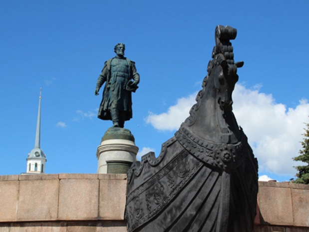
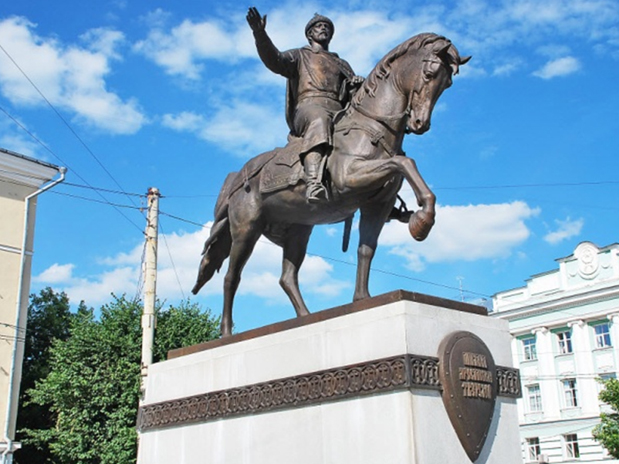
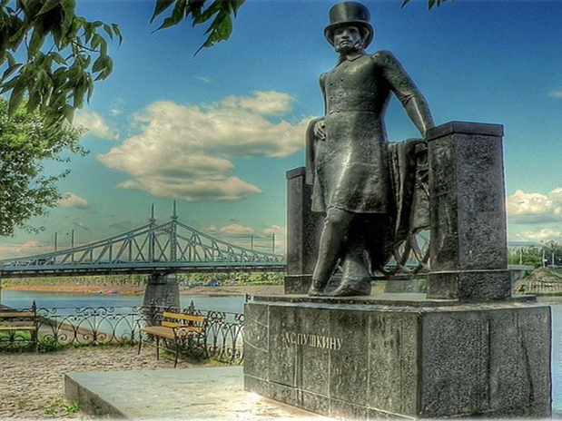
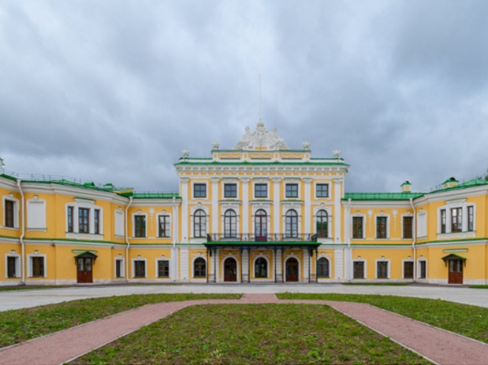
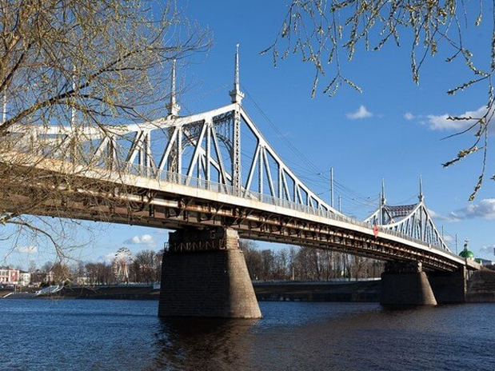

Тверь
Главные достопримечательности Твери
1. Императорский путевой дворец


Императорский путевой дворец построен во второй половине XVIII века по проекту архитектора Петра Романович Никитина. Расположение выбрано не случайно, ведь в то время через Тверь проходил Петербургский тракт, связывающий северную столицу с Москвой. По долгу службы дорогой пользовались высшие государственные чины и сама императрица Екатерина II. Именно поэтому здесь было решено построить небольшой дворец, где можно с комфортом отдохнуть и переночевать после долгого пути. Отсюда и название дворца — путевой. Здание неоднократно перестраивалось и реконструировалось различными архитекторами, благодаря чему впитало в себя элементы нескольких архитектурных стилей, включая классицизм и барокко. Главный корпус дворца двухэтажный и выходит фасадом на берег реки Волги. К нему прилегает въездной двор и пристроено два выдвинутых флигеля. Внутреннее убранство дворца получилось особенно роскошным — изделия из стекла и фарфора, выполненные руками великих мастеров картины и скульптуры, дорогая мебель, мраморные колонны, огромные камины и другие детали интерьера.
2. Собор "Белая Троица"

Собор "Белая Троица" или Троицкая церковь в Затьмачье — самое древнее из сохранившихся каменных зданий и самый старый из действующих храмов Твери. Храм выстроил в 1564 г. на свои средства Гаврила Андреевич Тушинский как вклад в Троице-Сергиеву лавру. Название «Белая Троица» собор получил, по-видимому, из-за цвета крыши или стен.
3. Казармы рождественской мануфактуры П.В.Берга


В 1878 Рождественскую мануфактуру приобрел уральский заводчик П.В.Берг. Жилые казармы и носят свое название по его фамилии. При Берге предприятие получило значительное развитие. Он закупал английские станки, фабрика была оснащена электричеством и водопроводом. Не забывал он и про рабочих - в 1880-х-1900-х гг. были построены школа, больница, родильный приют, холерное отделение, бани. При Берге по проекту архитектора Шмидта были выстроены три одинаковые большие пятиэтажные казармы (в 1901, 1904 и 1905-м годах соответственно). Комлпекс выполнен в формах романтизированного модерна.
4. Христорождественский монастырь

Впервые упомянут в грамоте, датированной 1514 годом. Распространено предание, что обитель возникла в начале XV века по благословению святителя и чудотворца Арсения, епископа Тверского.В Смутное время монастырь был разорён, с конца XVII века стал благоустраиваться, но до начала XIX века все постройки монастыря оставались деревянными. Главной святыней обители являлась чудотворная Тихвинская икона Богоматери, принесённая в монастырь в 1703 году.Монастырский ансамбль в стиле классицизма сложился в первой половине XIX века на средства графини Анны Иродионовны Чернышёвой. Предполагают, что проект этих зданий подготовил Н. А. Львов.Помогали жена, мать и сёстры императора Александра Павловича, посещавшие монастырь. Возведение нового собора в 1820 году по типичному для эпохи ампира проекту часто приписывают К. И. Росси, жившему в то время в Твери.
В 1920-е гг монастырь был упразднён, сохранившиеся здания использовались в качестве хозяйственных помещений, а после Великой Отечественной войны Рождественский собор служил спортзалом. В 1988 году верующим был возвращён Воскресенский собор, а сам монастырь стал возрождаться с 1 апреля 1999 года.
3. Памятник Афанасию Никитину
Впервые упомянут в грамоте, датированной 1514 годом. Распространено предание, что обитель возникла в начале XV века по благословению святителя и чудотворца Арсения, епископа Тверского. В Смутное время монастырь был разорён, с конца XVII века стал благоустраиваться, но до начала XIX века все постройки монастыря оставались деревянными. Главной святыней обители являлась чудотворная Тихвинская икона Богоматери, принесённая в монастырь в 1703 году. Монастырский ансамбль в стиле классицизма сложился в первой половине XIX века на средства графини Анны Иродионовны Чернышёвой. Предполагают, что проект этих зданий подготовил Н. А. Львов. Помогали жена, мать и сёстры императора Александра Павловича, посещавшие монастырь. Возведение нового собора в 1820 году по типичному для эпохи ампира проекту часто приписывают К. И. Росси, жившему в то время в Твери. В 1920-е гг монастырь был упразднён, сохранившиеся здания использовались в качестве хозяйственных помещений, а после Великой Отечественной войны Рождественский собор служил спортзалом. В 1988 году верующим был возвращён Воскресенский собор, а сам монастырь стал возрождаться с 1 апреля 1999 года.
Храмы монастыря

Собор Рождества Христова, 1820

Собор Воскресения Христова, 1913, 1820

Надвратная Спасская церковь, с настоятельскими покоями, ризницей, трапезной, 1801-1805

Больничная Троицкая церковь, 1830-1832

Церковь Царственных Страстотерпцев, 2006
5. Обелиск Победы

В декабре 1970 г. город праздновал 29-ю годовщину освобождения от немецких захватчиков. К этой дате был открыт монумент, ставший одним из символов Твери. В нижней части гранитного столпа, возвышающегося на 45,5 м, установлены чугунные плиты с барельефами, повествующими о ратном и трудовом подвиге Советских людей. Обелиск венчает чаша Вечного огня.
Памятник Афанасию Никитину

Именно из Твери в 1646 г. отправился в свой удивительный вояж «за три моря» знаменитый путешественник Афанасий Никитин, проложивший торговые пути в Персию, Индию, Турцию для российских купцов.
Памятник князю Михаилу Тверскому

Именно при князе Михаиле Ярославовиче город стал центром могущественного княжества, бросившего вызов самой Москве, подвергая сомнению ее право называться столицей северо-западной Руси. В 14-м веке Тверь была столицей.
Памятник Александру Сергеевичу Пушкину

Неудивительно, что в 1974 году в Твери установили памятник А.С. Пушкину. Великий поэт проезжал через Тверь около тридцати раз, и четырежды останавливался здесь. Тверь достаточно часто упоминается в его произведениях.
Советская площадь

Именно Тверь подчас называют маленьким Петербургом. По указу императрицы Екатерины II Тверь после уничтожающих пожаров была перестроена в камне. Украшением стал «версальский трезубец» — три луча улиц, которые расходятся лучами от Советской площади. Как в Санкт-Петербурге. Или в Версале. И в Риме.
Путевой дворец

В бытность правления Екатерины II случалось ей путешествовать из Северной столицы в Москву. Для отдыха монарших особ в 1764 г. был возведен Императорский дворец.
Староволжский мост

Именно Староволжский мост - самый первый из построенных в Твери мостов. Его длина составляет почти 216 метров. Своим внешним видом он напоминает мост Свободы в Будапеште.